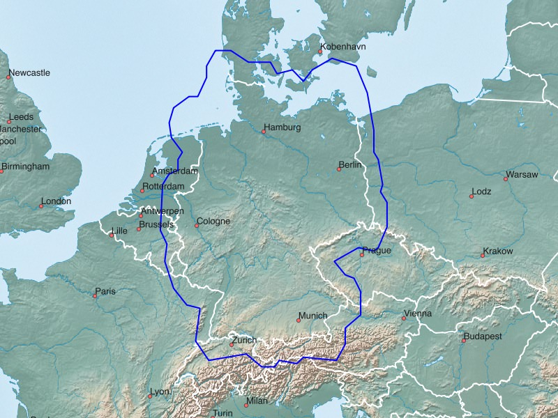

Für Deutschland, Österreich und die Schweiz sind sogenannte Pluskarten verfügbar. Hierbei geht die Kartenabdeckung um ca. 30-50 Kilometer über die Landesgrenze hinaus.

<<<<<<< Updated upstreamDeutschland+:
Garmin GPS-Gerät: Deutschland+ - Installationsimage für Micro-SD-Karte (1.9 GB)Microsoft Windows: Deutschland+ - Installationsarchiv für Garmin BaseCamp (1.9 GB)
Apple Mac OS X: Deutschland+ - Installationsarchiv für Garmin BaseCamp (1.9 GB)
Alle Betriebssysteme: Deutschland+ - Imageverzeichnis für QLandkarte (1.9 GB)
=======
Deutschland+
Deutsch
Garmin GPS-Gerät: (2.1 GB)Deutschland+ - Installationsimage für Micro-SD-Karte
Microsoft Windows: (2.1 GB)
Apple Mac OS X: (2.1 GB)
Alle Betriebssysteme: (2.1 GB)
>>>>>>> Stashed changes
Microsoft Windows: (714 MB)
Apple Mac OS X: (714 MB)
Alle Betriebssysteme: (714 MB)
Microsoft Windows: (2.0 GB)
Apple Mac OS X: (2.0 GB)
Alle Betriebssysteme: (2.0 GB)
Microsoft Windows: (2.0 GB)
Apple Mac OS X: (2.0 GB)
Alle Betriebssysteme: (2.0 GB)
>>>>>>> Stashed changes
Microsoft Windows: (1.1 GB)
Apple Mac OS X: (1.1 GB)
Alle Betriebssysteme: (1.1 GB)
Microsoft Windows: (1.1 GB)
Apple Mac OS X: (1.1 GB)
Alle Betriebssysteme: (1.1 GB)
Microsoft Windows: (507 MB)
Apple Mac OS X: (507 MB)
Alle Betriebssysteme: (507 MB)
Viel Freude an den Freizeitkarten ... und viele interessante Touren damit.
Deutschland+ - GMAP Installationsarchiv (komplett) für Garmin BaseCamp
Deutschland+ - GMAP Archiv für Garmin BaseCamp
Deutschland+ - Imageverzeichnis für QLandkarte
Österreich+
Deutsch
Garmin GPS-Gerät: (714 MB)
Österreich+ - Installationsimage für Micro-SD-Karte
Österreich+ - GMAP Installationsarchiv (komplett) für Garmin BaseCamp
Österreich+ - GMAP Archiv für Garmin BaseCamp
Österreich+ - Imageverzeichnis für QLandkarte
Frankreich+:
Garmin GPS-Gerät: Frankreich+ - Installationsimage für Micro-SD-Karte (1.7 GB)
Microsoft Windows: Frankreich+ - Installationsarchiv für Garmin BaseCamp (1.7 GB)
Apple Mac OS X: Frankreich+ - Installationsarchiv für Garmin BaseCamp (1.7 GB)
Alle Betriebssysteme: Frankreich+ - Imageverzeichnis für QLandkarte (1.7 GB)
=======
Frankreich+
Englisch
Garmin GPS-Gerät: (2.0 GB)
Frankreich+ - Installationsimage für Micro-SD-Karte
Frankreich+ - GMAP Installationsarchiv (komplett) für Garmin BaseCamp
Frankreich+ - GMAP Archiv für Garmin BaseCamp
Frankreich+ - Imageverzeichnis für QLandkarteFranzösisch
Garmin GPS-Gerät: (2.0 GB)
Frankreich+ - Installationsimage für Micro-SD-Karte
Frankreich+ - GMAP Installationsarchiv (komplett) für Garmin BaseCamp
Frankreich+ - GMAP Archiv für Garmin BaseCamp
Frankreich+ - Imageverzeichnis für QLandkarte
Italien+
Englisch
Garmin GPS-Gerät: (1.1 GB)
Italien+ - Installationsimage für Micro-SD-Karte
Italien+ - GMAP Installationsarchiv (komplett) für Garmin BaseCamp
Italien+ - GMAP Archiv für Garmin BaseCamp
Italien+ - Imageverzeichnis für QLandkarteItalienisch
Garmin GPS-Gerät: (1.1 GB)
Italien+ - Installationsimage für Micro-SD-Karte
Italien+ - GMAP Installationsarchiv (komplett) für Garmin BaseCamp
Italien+ - GMAP Archiv für Garmin BaseCamp
Italien+ - Imageverzeichnis für QLandkarte
Schweiz+
Deutsch
Garmin GPS-Gerät: (507 MB)
Schweiz+ - Installationsimage für Micro-SD-Karte
Schweiz+ - GMAP Installationsarchiv (komplett) für Garmin BaseCamp
Schweiz+ - GMAP Archiv für Garmin BaseCamp
Schweiz+ - Imageverzeichnis für QLandkarte